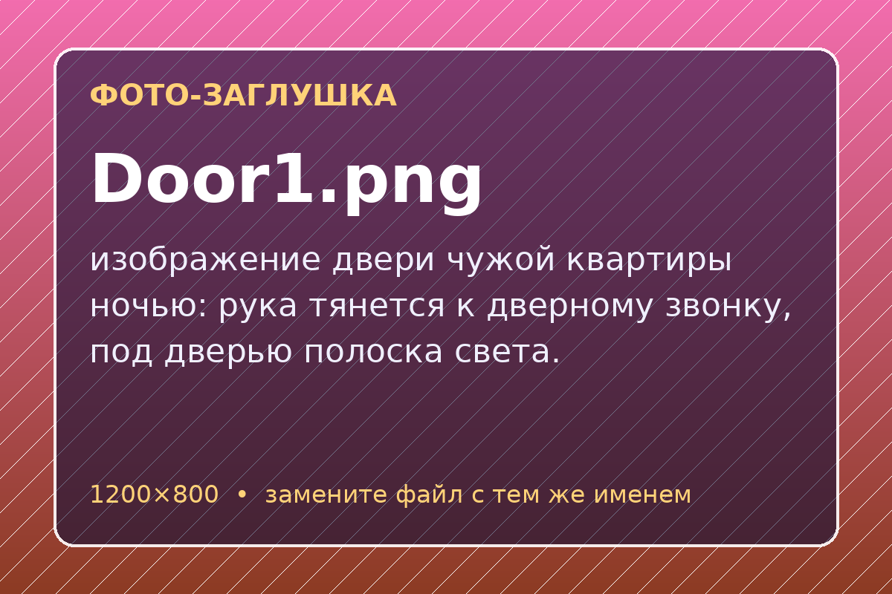
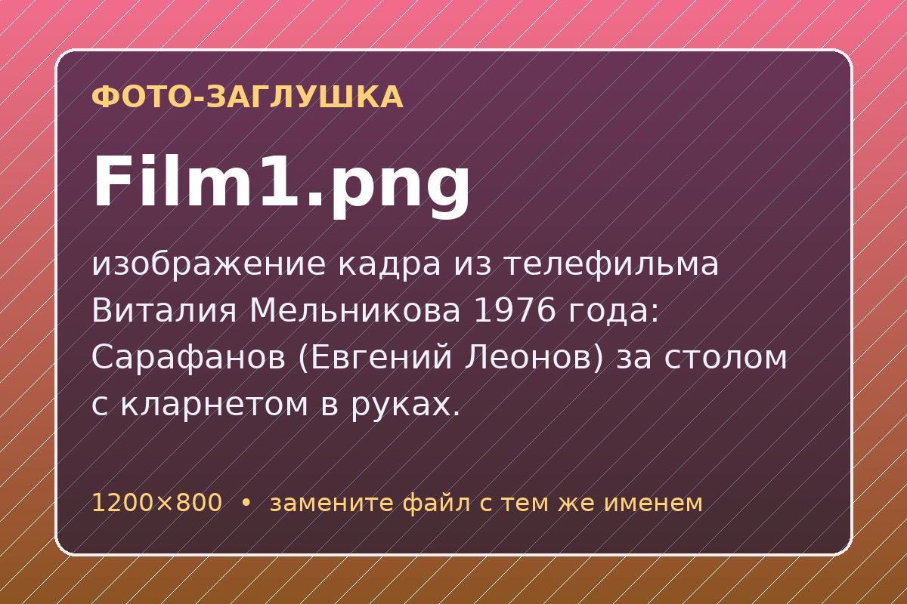
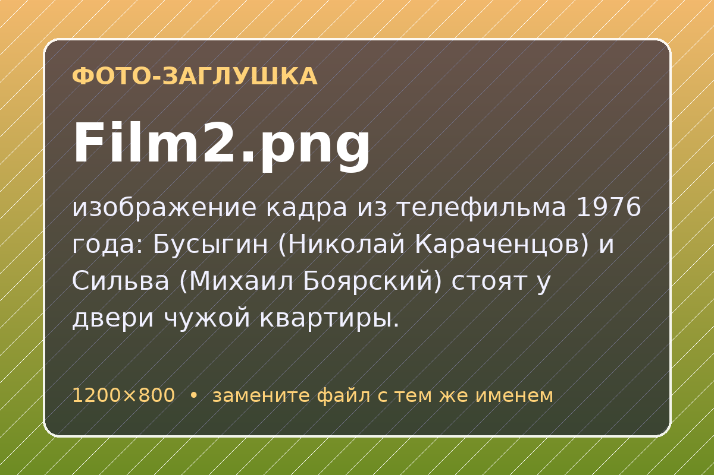
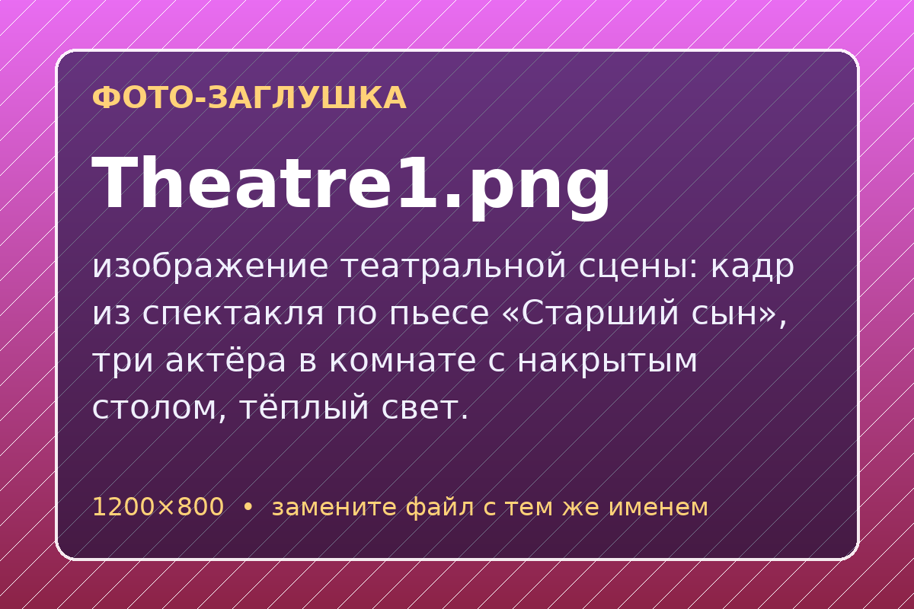
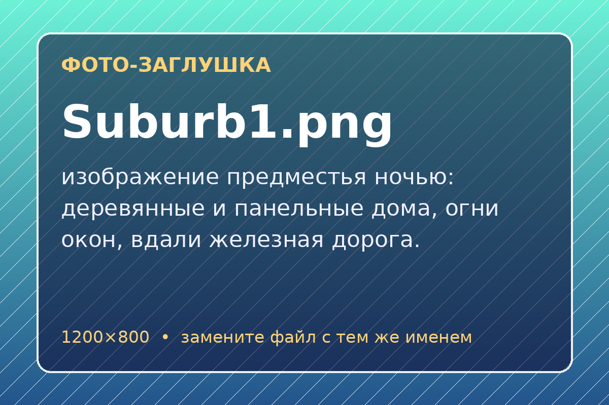

Базовый уровень
Чем Бусыгин отличается от Сильвы? Ответьте в 5–7 предложениях и подтвердите каждую мысль эпизодом из пьесы.
Открытый урок литературы по пьесе Александра Вампилова
Две случайные фигуры на ночной платформе, одна выдуманная семья и вопрос, который не решается за один вечер: что делает человека сыном и братом?
Можно постучать и в светящееся окно. Строки преподавателя, курса и группы и даты редактируются щелчком.
Одиннадцать остановок. На каждой есть задание, которое класс решает вместе или по командам. Нажмите на билет, и страница перенесёт вас к нужному заданию.
Платформа пуста, до утра далеко, в кармане ни копейки. Что вы сделаете? Класс голосует, преподаватель нажимает на вариант за каждую поднятую руку.
Выберите вариант, чтобы увидеть, что думает класс.

Нажмите на окно, чтобы повернуть карточку. На обороте есть вопрос, который стоит обсудить с соседом по парте.
Что в пьесе значат эти четыре вещи? Предложите версию, а потом нажмите на фото.
Перетаскивайте события или двигайте их стрелками. Когда порядок верный, электричка дойдёт до последней станции.



Выберите карточку, потом нажмите на героя. Или перетащите карточку к нужному имени. Каждая ошибка попадает в счётчик, но верный ответ можно найти с любой попытки.
Ошибок: 0
Выберите эпизод, впишите студентов и распределите роли жребием. Читать нужно по тексту пьесы вашего издания. Задача чтецов не просто произнести реплики, а сыграть подтекст.
Поставьте оценки после чтения.
Посмотрите фрагмент телефильма Виталия Мельникова (1976) и сравните его с текстом. По каждому пункту группа голосует: нажмите на вариант за каждую поднятую руку.
Голосов пока нет.
Две стороны, по пять минут на аргументы. Потом класс голосует. Весы покажут, чья позиция оказалась убедительнее. Главное правило: каждый довод нужно подтвердить эпизодом.
Весы ждут голосов.
«Я считаю, что… потому что в эпизоде…» / «Это сильный довод, но…» / «Можно ли назвать это ложью, если…»
Выберите героя и заполните пять строк. Справа складывается открытка, которую можно скачать на память.
Бусыгин
…
…
…
…
Выберите, что вы забираете с урока, и зажгите окно этим цветом. Двадцать окон, и дом оживёт.
Горит 0 окон из 20
Все люди — братья
Так называется неоконченная оратория Сарафанова. Урок закончился, пьеса осталась.
Чем Бусыгин отличается от Сильвы? Ответьте в 5–7 предложениях и подтвердите каждую мысль эпизодом из пьесы.
Посмотрите фильм 1976 года или любую театральную постановку. Напишите отзыв: что режиссёр понял иначе, чем вы?
Письмо Бусыгина Сарафанову через год. Что он решится сказать, о чём всё ещё будет молчать?